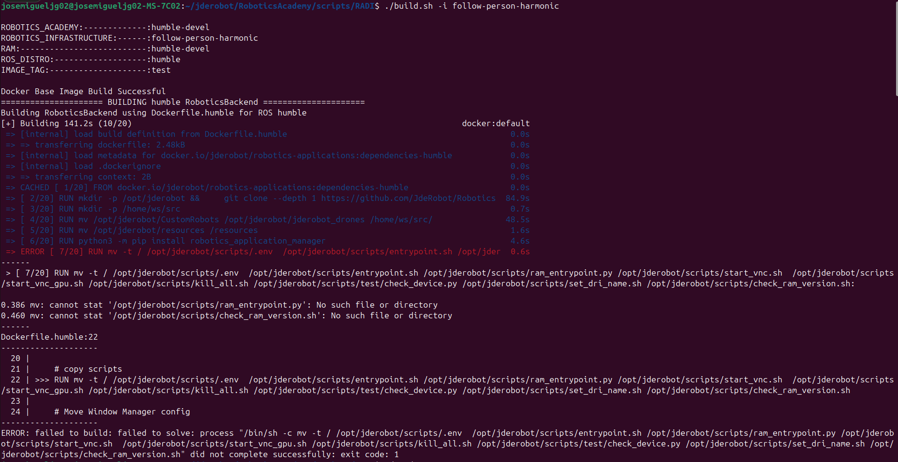

Problemas con RADI
Errores durante la creación del entorno RADI propioDurante el proceso de creación de mi propio RADI siguiendo los pasos oficiales, me encontré con un error al intentar compilar la imagen del Docker.

El sistema no conseguía completar la compilación del RADI, lo que impedía avanzar con la migración del ejercicio Follow Person a Harmonic.
Investigación del problema
Tras analizar el error, detecté que el problema no estaba en la configuración del Docker ni en los scripts de build, sino en las dependencias de los repositorios.
En concreto, la rama del repositorio RoboticsInfrastructure que estaba utilizando para el ejercicio Follow Person (follow-person-harmonic) estaba desactualizada respecto a la rama humble-devel.
Esta incompatibilidad provocaba que el RADI no pudiera compilar correctamente.
Solución aplicada
Para resolverlo, realicé un rebase de mi rama de trabajo con la rama actualizada humble-devel:
# Ir al repositorio de RoboticsInfrastructure cd RoboticsInfrastructure # Asegurarse de estar en la rama correcta git checkout follow-person-harmonic # Traer los últimos cambios git fetch origin # Rebase contra la rama actualizada git rebase origin/humble-devel
Durante el rebase se resolvieron algunos conflictos menores en dependencias del entorno.
Una vez finalizado el proceso, la compilación del RADI funcionó correctamente y pude continuar con el ejercicio sin problemas.
Conclusión
El problema no era del entorno Docker en sí, sino de la falta de sincronización entre ramas del repositorio, al haber intentado usar una rama antigua surgieron esos problemas. Mantener las ramas actualizadas con humble-devel es clave para evitar errores de compilación en el RADI.